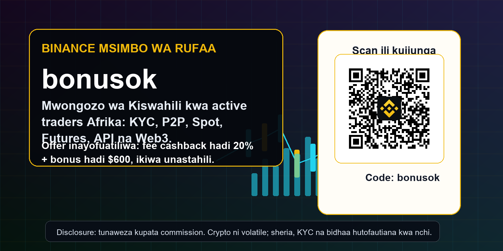
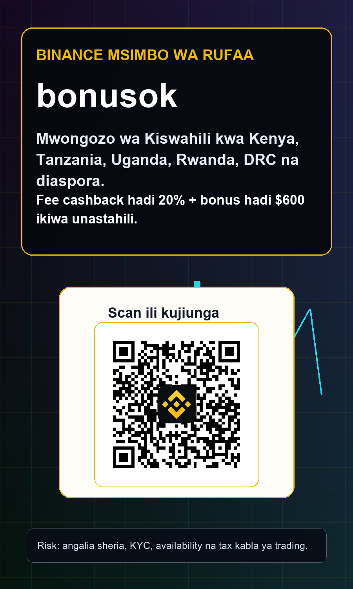
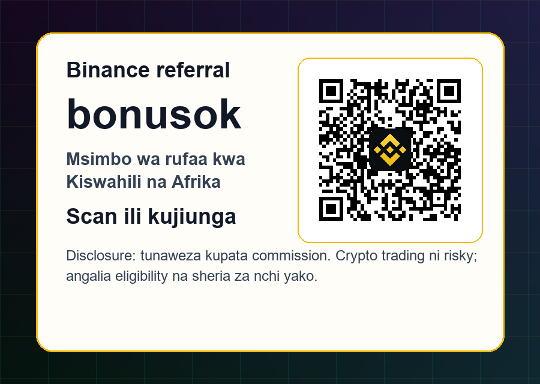

Disclosure: ukurasa huu una referral link; tunaweza kupata commission uki-register au ukitrade kupitia link. Crypto ni volatile. KYC, bonus, product availability na sheria hubadilika kwa nchi. Tanzania, Uganda na nchi nyingine zenye tahadhari rasmi zinahitaji ukaguzi wa local law kabla ya hatua yoyote.
Binance msimbo wa rufaa bonusok: mwongozo wa Kiswahili kwa trader makini Afrika
Mwongozo wa Kiswahili kuhusu Binance referral code bonusok kwa Kenya, Tanzania, Uganda, Rwanda, DRC na diaspora: fee cashback, KYC, P2P, Spot, Futures, Earn, API, Web3 na tahadhari za sheria. Huu si ushauri wa fedha, tax au sheria. Soma official Binance terms na vyanzo vya nchi yako kabla ya kutumia bidhaa yoyote.


Picha imetengenezwa kwa measured layout; QR halisi ya bonusok imeingizwa locally baada ya render.
Jibu la haraka: bonusok ni nini?
Binance msimbo wa rufaa bonusok ni code ya kuanzia akaunti mpya kupitia link yenye ref=bonusok. Ukiscan QR kwenye ukurasa huu, link inayofunguka ni accounts.binance.com/register?ref=bonusok. Kabla ya kuweka barua pepe, namba ya simu, KYC au deposit, hakikisha code imebaki kwenye URL au imeonekana kwenye sehemu ya referral. Baada ya akaunti kufunguliwa mara nyingi haiwezekani kuongeza code nyingine, kwa hiyo hatua hii ndogo ina maana kubwa kwa mtu anayepanga kufanya trading kwa muda mrefu.
Offer tunayoiandika hapa ni conditional: watumiaji wanaostahili wanaweza kupata fee cashback hadi 20% na bonuses hadi $600 kulingana na masharti ya Binance, KYC, eneo, muda wa kampeni na aina ya bidhaa. Hii si ahadi ya faida, si zawadi ya lazima, na si ushauri wa fedha. Lengo ni kukusaidia uingie kwa njia safi, ujue risk, uelewe sheria za nchi yako, na kisha uamue kama Binance ni venue inayofaa kwa trading yako.
Kwa nini tumeandika kwa Kiswahili
Watazamaji wa Kiswahili si kundi moja dogo. Kuna trader wa Kenya anayefuatilia VASP Act na P2P USDT, Mtanzania anayehitaji tahadhari kali kutoka Bank of Tanzania, Mganda anayepaswa kujua onyo la serikali kuhusu crypto, Mnyarwanda anayefuatilia framework mpya ya virtual assets, na watumiaji kutoka DRC, Burundi, Malawi, Zambia au diaspora wanaotumia Kiswahili kama lugha ya kazi. Kwa sababu hiyo, ukurasa huu hauandiki kana kwamba sheria ni sawa kila nchi.
Search intent pia imechanganyika. Watu hutafuta Binance referral code, Binance invite code, Binance promo code, msimbo wa rufaa Binance, kodi ya rufaa Binance, bonusok, ada nafuu, P2P USDT, KYC, Futures na API. Tumeacha maneno ya Kiingereza ya crypto pale yanapotumika kawaida, lakini maelezo ya hatua na tahadhari yapo kwa Kiswahili rahisi ili mtumiaji asiingie kwenye bidhaa yenye risk bila kuelewa anachofanya.
Nani anaweza kuvutiwa na ukurasa huu
Ukurasa huu unalenga active traders, si watu wanaotafuta tu bonus ya haraka. Active trader hujali ada, liquidity, slippage, spread, order type, funding rate, API stability, record keeping na ulinzi wa akaunti. Kwa trader anayefanya orders nyingi, fee cashback inaweza kuwa sehemu ya cost control. Kwa beginner anayefanya trade moja tu bila mpango, bonus inaweza kuwa distraction. Ndiyo maana tumejenga mwongozo kama checklist badala ya matangazo ya kelele.
Mtu anayefaa kusoma ni yule anayekubali kufanya KYC halali, kutumia akaunti yake mwenyewe, kutofuata njia za bypass, kuandika risk budget, na kuangalia kama Spot, Futures, Earn, P2P au Web3 zinapatikana katika eneo lake. Kama lengo lako ni kujaribu VPN, kutumia taarifa zisizo sahihi, au kuzunguka sheria za benki, ukurasa huu si kwa ajili yako. Referral revenue ya muda mrefu hutoka kwa traders safi, si registrations hatari.
Kenya: regulation inaingia kwenye mfumo
Kenya ni sehemu muhimu kwa ukurasa wa Kiswahili kwa sababu market yake ina watumiaji wengi wa mobile money, P2P, remittances na crypto learning groups. Central Bank of Kenya ilitoa public notice kwamba Virtual Assets Service Providers Act, 2025 ilianza kutumika Novemba 2025, na draft VASP Regulations 2026 zinaeleza mfumo wa licensing, AML/CFT, disclosures na advertisement rules. Hii ina maana kubwa kwa mtu anayesoma page ya referral: lugha lazima iwe clear, risk lazima isemwe, na huduma lazima isionekane kama free money.
Kwa Kenyan trader, hatua ya kwanza si kuangalia bonus pekee. Angalia kama Binance na bidhaa unayotaka kutumia zinapatikana kwako, kama KYC yako inakubalika, kama P2P/payment route ni halali na salama, na kama tax/records zako zinaweza kuonyesha deposits, withdrawals na trades. Kama unafanya volume kubwa, hifadhi statement, order history, wallet transfers, screenshots za muhimu na maelezo ya gharama. Active trader wa Kenya anahitaji compliance workflow pamoja na trading workflow.
Tanzania: tahadhari inapaswa kuwa kubwa
Kwa Tanzania, Bank of Tanzania imetoa public notice kwa Kiswahili kuhusu virtual currencies, ikionya umma dhidi ya trading, marketing na matumizi ya virtual currency kwa sababu hayajaidhinishwa kisheria katika framework ya fedha za kigeni. Kwa sababu hiyo, ukurasa huu hauwahimizi wakazi wa Tanzania kufanya signup, deposit au trading kama hatua hiyo inapingana na sheria au maelekezo ya mamlaka. Hii ni sehemu muhimu ya kuwa professional na compliant.
Kama uko Tanzania na unasoma kwa elimu, tumia ukurasa huu kuelewa terminology: referral code, KYC, Spot, Futures, API, Web3, P2P, custody na risk. Usitumie VPN au taarifa zisizo sahihi ili kufungua akaunti. Usitumie third party account au payment route ya mtu mwingine. Kama mazingira ya kisheria yatabadilika, re-check official notices kabla ya hatua yoyote. Referral ya kweli haipaswi kujengwa juu ya kutokuwa wazi kuhusu local restrictions.
Uganda, Rwanda na DRC: usichukulie eneo lote sawa
Uganda ina historia ya public statements zinazosema cryptocurrencies si legal tender na kwamba serikali haijatoa leseni kwa organization kuuza au kuwezesha trading ya crypto, pamoja na onyo kuhusu consumer protection. Kwa hiyo Ugandan user anatakiwa kuwa makini sana kuhusu law, banking, mobile money, tax na risk ya huduma zisizodhibitiwa. Kama hakuna clarity ya kisheria, usifanye deposit kwa sababu umeona referral code mtandaoni.
Rwanda imeanza kuunda framework ya virtual asset business, na Capital Market Authority Rwanda ilisema law mpya ilichapishwa katika Official Gazette Mei 2026 huku regulations za kuifanya kazi zikiandaliwa. Hii ni tofauti na Tanzania au Uganda, lakini bado haimaanishi kila platform au product iko approved kwa kila user. Kwa DRC na maeneo mengine ya Afrika ya Kiswahili, chukua same principle: sheria ya nchi yako, access ya Binance, KYC, tax na payment route lazima vikaguliwe kabla ya click kuwa trading activity.
Latest Binance hooks kwa active trader
Sababu ya kuzungumzia Binance sasa si code pekee. Binance imeendelea kuongeza hooks ambazo active traders wanaweza kufuatilia: Binance Wallet Web3 API kwa developers na institutions, Prediction Markets API kwa eligible users, upgrade ya Prediction Markets iliyokamilika tarehe 2026-07-02, new trading pairs, Trading Bots, margin changes, futures tick-size updates na delisting notices. Hizi ni signal kwa trader anayefanya kazi: announcement center ni risk dashboard, si news ya kawaida.
Kwa mfano, pair mpya inaweza kutoa opportunity lakini pia inaweza kuwa na spread kubwa au liquidity nyembamba. Delisting notice inaweza kuathiri Futures, Margin, Funding Rate Arbitrage Bot, Simple Earn, Dual Investment, Loan, Mining Pool na spot bots. Active trader wa Afrika Mashariki anayetumia mobile data au bot iliyowashwa usiku anatakiwa kuwa na habit ya kusoma notices kabla ya order kubwa, kabla ya kuacha bot ikifanya kazi, na kabla ya kuweka asset katika Earn.
Registration checklist kabla ya deposit
Hatua ya kwanza: fungua link rasmi yenye ref=bonusok au scan QR. Hatua ya pili: hakikisha domain ni accounts.binance.com, si copycat. Hatua ya tatu: tumia email/phone yako mwenyewe, password manager na 2FA. Hatua ya nne: weka anti-phishing code na withdrawal whitelist mapema. Hatua ya tano: kamilisha KYC kwa taarifa zako halali. Hatua ya sita: kabla ya deposit, angalia kama code ime-apply, kama reward center inaonyesha eligibility, na kama region yako inaruhusu bidhaa unayotaka.
Hatua ya saba: fanya test deposit ndogo kama njia yako ya payment ni mpya. Hatua ya nane: usitumie P2P bila kuelewa counterparty risk, payment confirmation, chargeback risk na rules za platform. Hatua ya tisa: export trade history au record statement mapema ili tax na reconciliation zisiwe shida. Hatua ya kumi: kama unataka Futures, Margin au API, usianze siku ya kwanza. Kwanza fanya Spot order ndogo na uelewe interface.
Fee cashback na gharama halisi ya trading
Fee cashback inaweza kuvutia active traders kwa sababu ada hukusanyika polepole. Kama unafanya scalping, swing rotation, grid strategy, rebalance ya portfolio au API execution, maker/taker fee, spread na slippage zinaingia moja kwa moja kwenye PnL. Msimbo wa rufaa bonusok unaweza kupunguza baadhi ya gharama kwa eligible user, lakini si dawa ya strategy mbaya. Kama entry yako ni ya kubahatisha, hata ada ndogo haitaokoa account.
Fanya hesabu rahisi: volume yako ya mwezi, average fee rate, expected spread, funding cost kama unatumia perpetuals, withdrawal cost na tax/reporting cost. Kisha linganisha hiyo na cashback inayowezekana. Hapo ndipo referral code inakuwa decision ya business, si coupon tu. Trader makini haifanyi trade ili kupata bonus; anatumia bonus kupunguza friction kwenye mpango ambao tayari una risk controls.
Spot, Futures, Margin na Bots
Spot trading ni rahisi kueleza: unanunua au kuuza asset. Futures na Margin zinaongeza leverage, liquidation, funding rate, collateral risk na stress ya haraka. Bots zinaweza kusaidia discipline ya execution, lakini bot mbaya au pair iliyodelist inaweza kuleta loss ya haraka. Kwa hiyo ukurasa huu haupendekezi beginner aanze na leverage. Anza na Spot, elewa order types, kisha soma Futures risk kama una sababu ya kweli.
Trading Bots na API zinahitaji checklist tofauti: pair status, minimum notional, tick size, step size, precision, rate limits, error handling, stop conditions na notification. Kama Binance inatangaza removal ya pair au tick-size update, bot yako lazima ijue. Usiache bot live bila kill switch. Usipe API withdrawal permission. Tumia IP whitelist, log monitoring na small capital testing. Fee cashback haiwezi kufidia bug ya automation.
P2P na mobile money mindset
Katika Afrika Mashariki, P2P na mobile money mindset ni ya kawaida, lakini crypto P2P si sawa na kutuma pesa kwa rafiki. Kuna counterparty risk, proof-of-payment fraud, fake SMS, delayed settlement, bank reversal, account freeze na local AML questions. Binance P2P inaweza kuwa useful pale inapopatikana na kuruhusiwa, lakini user anatakiwa kusoma rules, kutumia escrow, kuthibitisha payment ndani ya platform na kuepuka off-platform deals.
Usikubali mtu akushawishi kupitia Telegram au WhatsApp kwamba ataongeza bonus au atakusaidia KYC. Usitumie account ya mtu mwingine kwa sababu payment route yako haifanyi kazi. Kama local law hairuhusu crypto transaction, P2P inaweza kuwa risk kubwa zaidi kuliko exchange trading yenyewe. Kwa trader anayefanya volume, banking relationship na record keeping ni sehemu ya strategy, si afterthought.
Earn, stablecoins na idle capital
Binance Earn, stablecoins na yield products zinaonekana kama njia ya kutumia capital isiyokuwa kwenye trade, lakini hakuna product isiyo na risk. APY inaweza kubadilika, asset inaweza kushuka, redemption inaweza kuwa na masharti, issuer risk inaweza kuongezeka, na product inaweza kutopatikana katika region yako. Kama unafanya trading kwa Kiswahili market, usitumie stablecoin yield kama replacement ya emergency fund.
Kwa active trader, idle capital plan inaweza kuwa: sehemu ndogo kwa trading float, sehemu ya tax reserve, sehemu ya stablecoin waiting capital, sehemu ya long-term self-custody, na sehemu ya cash nje ya exchange. Referral code inaweza kusaidia mwanzo, lakini capital allocation ndiyo inafanya account idumu. Kama unaishi kwenye nchi yenye onyo kali, usitumie Earn au stablecoins bila clarity ya sheria.
Web3 na wallet risk
Binance Wallet Web3 API ni hook nzuri kwa developers na power users, lakini Web3 risk ni tofauti na exchange risk. Seed phrase, approvals, smart contracts, bridges, phishing, malicious dApps na wallet permissions vinaweza kupoteza fedha bila support ticket rahisi. Kama unaingia Web3 kwa sababu Binance Wallet ina tools mpya, tumia wallet yenye capital ndogo, revoke approvals, verify contract addresses na usiweke seed phrase kwenye website yoyote.
Prediction Markets API na Web3 integrations ni za eligible users tu na zinaweza kuwa restricted kwa region. Hata kama technical feature ipo kwenye announcement, usifikirie kuwa inapatikana Tanzania, Kenya, Uganda, Rwanda au DRC bila kuangalia account yako. Active trader mzuri anauliza maswali matatu: je, ni legal kwangu, je, ni available kwenye account yangu, na je, ninajua risk ya product hii?
Security stack ya lazima
Usalama wa akaunti unaanza kabla ya first trade. Tumia password manager, 2FA app badala ya SMS pale inapowezekana, anti-phishing code, withdrawal whitelist, device review, email security, SIM-swap protection na separate browser profile kwa finance. Kama unatumia shared computer, cyber cafe au phone ya kazini, risk inaongezeka. Binance account yenye volume ni target, hasa kwa trader anayeshiriki screenshots kwenye social media.
API key ni siri kama password. Usilitume kwa bot vendor bila kujua permissions. Zima withdrawals. Weka IP restriction. Tumia sub-account au small test wallet pale inapowezekana. Telegram signal groups mara nyingi huleta phishing links, fake support, fake airdrop na fake recovery services. Hakuna Binance support halali itakuomba OTP, seed phrase au API secret. Ukipoteza account, fee cashback haimaanishi kitu.
Record keeping na tax
Kila nchi ina tax na reporting rules zake. Kenya inaelekea kwenye framework ya VASP, Tanzania ina onyo la virtual currency, Uganda imesema hakuna consumer protection ya crypto, Rwanda inaunda licensing regime. DRC na nchi nyingine zinaweza kuwa na rules tofauti. Hivyo, export trades, deposits, withdrawals, P2P orders, wallet transfers na screenshots za muhimu. Usisubiri mwaka uishe ndipo uanze kutafuta data.
Kwa active trader, spreadsheet rahisi inaweza kuwa na date, asset, side, quantity, price, fee, funding, deposit source, withdrawal destination, note ya strategy na tax category. Kama Binance inabadilisha product availability au delists asset, record zako zinasaidia kufunga position na kueleza cashflow. Referral code ni mwanzo wa funnel; record keeping ndiyo inasaidia trader asibaki na chaos.
Mistakes zinazoharibu referral value
Mistake ya kwanza ni kusajili akaunti kabla ya kuthibitisha code. Ya pili ni kuanza Futures kwa leverage kubwa. Ya tatu ni kuamini bonus bila kusoma terms. Ya nne ni kutumia KYC ya mtu mwingine. Ya tano ni kupuuza Tanzania au Uganda warnings. Ya sita ni kufanya P2P nje ya platform. Ya saba ni kuacha bot live wakati pair ina removal notice. Ya nane ni kuweka API withdrawal permission. Haya yote yanapunguza chance ya kuwa active trader wa muda mrefu.
Kwa upande wetu, referral bora ni mtu anayesoma, anaelewa, anaingia kwa njia halali, anakamilisha KYC, anafanya deposit inayofaa uwezo wake, anafanya first trade kwa size ndogo, na anarudi baada ya siku 7, 30 na 90. Ndiyo maana material hii ni ndefu na ina tahadhari nyingi. Tunataka registrations chache lakini zenye quality kuliko clicks nyingi kutoka kwa watu wasiofaa.
Mpango wa siku 30
Siku 1 hadi 3: soma local law, fungua account ikiwa inaruhusiwa, verify bonusok, weka security, kamilisha KYC, na usifanye deposit kubwa. Siku 4 hadi 10: fanya test deposit ndogo, Spot order ndogo, export history na jifunze order types. Siku 11 hadi 20: tengeneza watchlist, alerts, trading journal, risk budget na pair selection. Soma announcements kila siku kabla ya order.
Siku 21 hadi 30: kama bado unataka advanced products, soma Futures liquidation, Margin borrowing, Earn terms, API permissions na Web3 wallet risk. Usitumie bidhaa kwa sababu inaonekana kwenye menu. Tumia bidhaa kwa sababu unaelewa ni nini, ipo katika region yako, na inaingia kwenye plan yako. Kama hauna plan iliyoandikwa, bonusok inaweza kusubiri; capital yako haiwezi kusubiri.
FAQ fupi
Je, bonusok inafanya kazi kila nchi? Hapana. Eligibility hutegemea Binance terms, KYC, region na product availability. Je, Tanzania user anapaswa kujiandikisha? Bank of Tanzania imeonya kuhusu virtual currencies; verify local law kwanza na usibypass restrictions. Je, Kenya iko wazi kabisa? Kenya ina VASP Act na draft regulations; bado user anatakiwa kuangalia licensing, disclosures, tax na availability ya platform/product.
Je, QR ni halisi? Ndiyo, QR kwenye picha imetoka kwenye local Binance bonusok asset na imedecode kuwa https://accounts.binance.com/register?ref=bonusok. Je, Futures ni kwa beginners? Kwa kawaida hapana. Je, fee cashback ni guaranteed profit? Hapana. Je, tunaweza kupata commission? Ndiyo, page hii ina referral link na tunaweza kulipwa commission uki-register au ukitrade kupitia link.
Hitimisho
Kama uko kwenye jurisdiction inayoruhusu matumizi ya Binance na unaelewa KYC, risk, tax na product availability, msimbo wa rufaa bonusok unaweza kuwa entry point nzuri kwa fee cashback na bonus eligibility. Lakini usiache code ikuondoe kwenye discipline. Trader wa Kiswahili anayefanikiwa si yule anayekimbilia promotion; ni yule anayelinda account, anaelewa law, anapunguza gharama, na anaacha trades mbaya zipite.
Kwa Tanzania, Uganda na nchi nyingine zenye onyo au uncertainty, soma kwa elimu na verify official rules kabla ya action. Kwa Kenya na Rwanda, fuatilia regulations zinavyoendelea. Kwa DRC na diaspora, usichukulie kuwa availability ya mtu mwingine ni availability yako. Ukiamua kuendelea, tumia link au QR ya bonusok, kagua code, fanya KYC safi, anza kidogo, na weka risk warning mbele ya kila trade.

Vyanzo vilivyokaguliwa
- Binance Announcement Center
- Binance Wallet Web3 API
- Binance Wallet Prediction Markets API
- Prediction Markets upgrade completed 2026-07-02
- Binance delisting and risk notice
- Binance Spot pair removal notice
- Kenya CBK VASP Act public notice
- Kenya Draft VASP Regulations 2026
- Bank of Tanzania public notice on virtual currency
- Uganda Ministry of Finance crypto-currency statement
- Rwanda CMA virtual asset business law update
Risk warning: Crypto, derivatives, bots, Web3 products, stablecoins na rewards vina risk. Usifanye trade kwa pesa usizoweza kupoteza. Usibypass restrictions, usitumie false KYC, na usichukulie bonus kama profit ya uhakika.